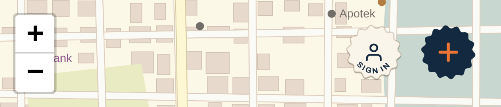
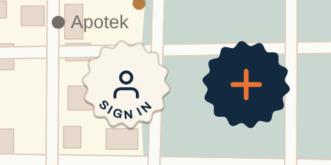
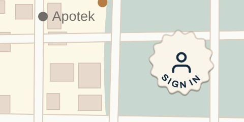

Arrive

0.06s

0.13s

0.25s

Signed in
Your notes, applied: the person is centred and bigger; SIGN IN is smaller, spaced out a little, and has room from the edge so nothing crowds.



Navy ink lands and covers the words, and the person grows into your usual badge. Signing out, the ink dries away and the sign-in badge is left.